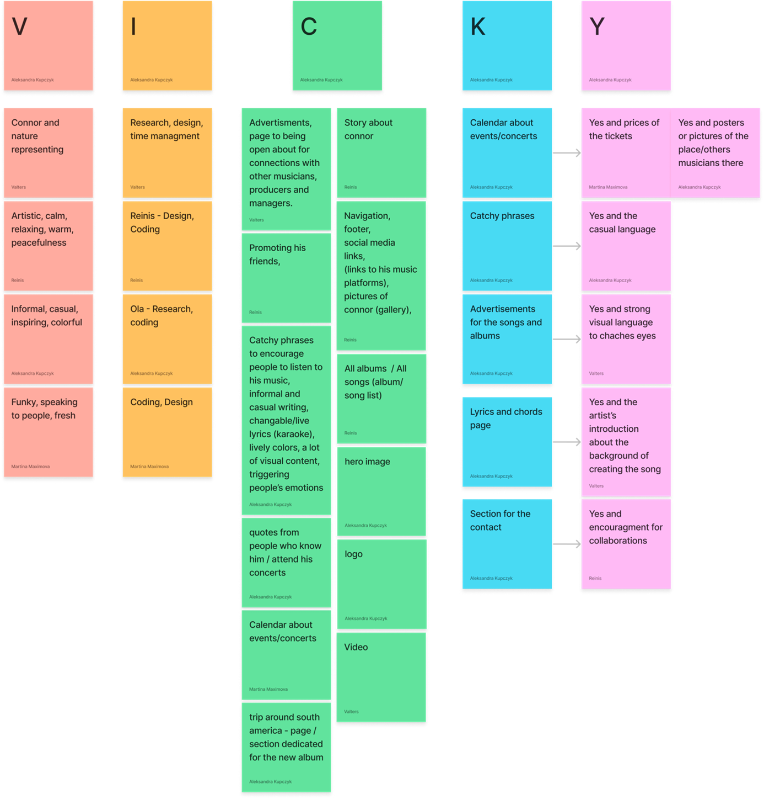
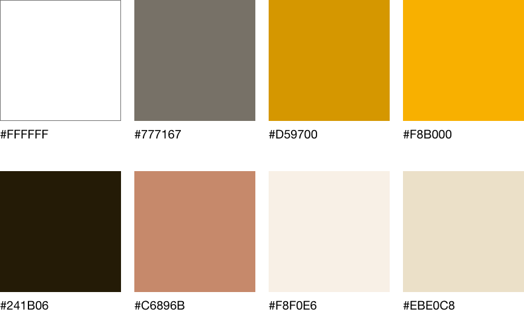
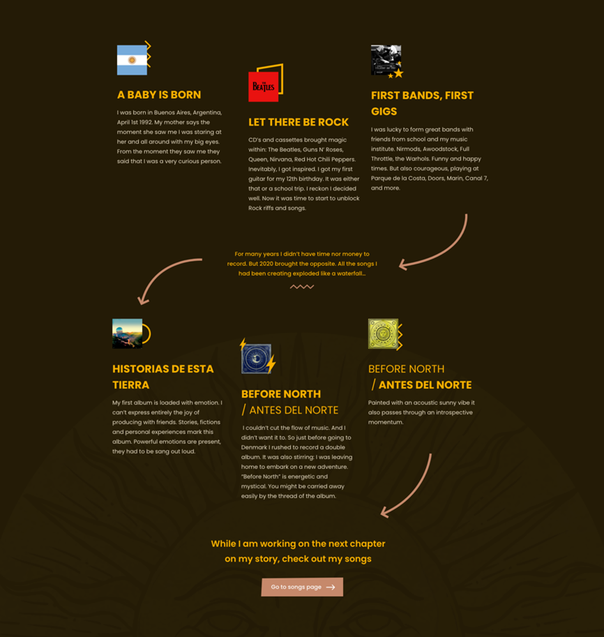
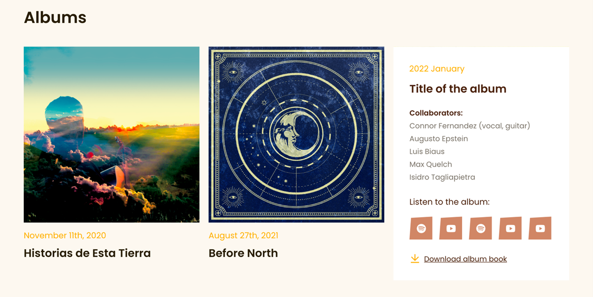
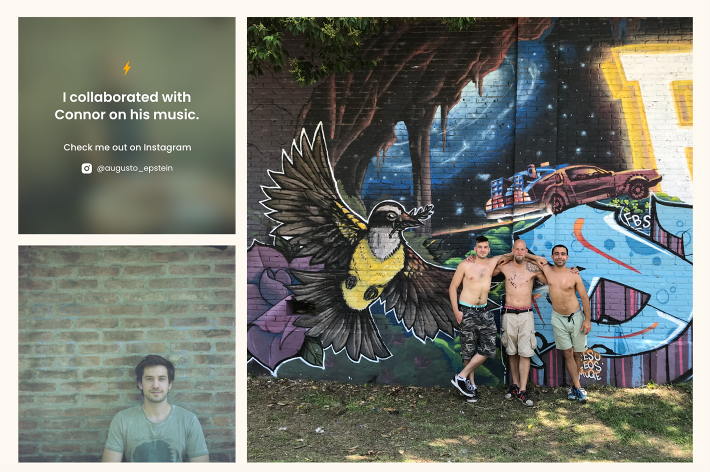

Year:
2022
Tasks:
Coding, Design, Research
Tech:
HTML, CSS, JavaScript
Year:
2022
Tasks:
Coding, Design, Research
Tech:
HTML, CSS, JavaScript
The goal for this project was to develop a musician's portfolio website for Connor Fernandez to show his work and set the foundation for his online branding. The most important things for Connor were to show who he is, what he does and advertise his work. Thought client meeting with Connor the team found out three things that he wanted in his portfolio:
The team got started with qualitative user research by conducting interviews with people belonging to user categorization made by the team for this project. After analysing and summarizing the conducted data it was the time for brainstorming session using the VICKY method.
While the sitemap was being finalized the team started sketching first design ideas which were then finalized into one sketch. This sketch was used to develop the first iteration of wireframes. The team then came up with ground like colour pallet.
The next steps were mock-up and high fidelity prototype. The high fidelity prototype was then tested and adjusted accordingly.
We could not forget about the clients wishes and this is how we solved them.
To tell his story - The team came up with a solution for this wish in a form of infographic following the important milestones in his life as a person and musician on “My story” page.
To have all his lyrics on the website - Lot of discussions where led in the team about how to solve this problem as it is very complex and heavy to have all the lyrics on the website. This problem was solved by putting a link to album book in pdf format for each album on “Albums & Singles” page.
To introduce people he collaborated with – We were provided with photos and links to Instagram for each artist that collaborated with our client. So the team decided to make a gallery with a hover effect over photo of an artist with a link to their Instagram. We thought this was a pretty cool idea and it came out looking great.
The project was visualized using HTML, CSS and JavaScript. As there were multiple team members cooperating together, GitHub was used to make the development easier and more efficient.
As the same colour pallet was used all over the website the “:root” was used in CSS. It was later used when need as “var(--colourname)”. In development of good layout for this solution both “display: flex” and “display: grid” where used to manipulate the content on the pages.
For purposes of layout and browser better understanding of the content on the website semantic tags as “section”, “article”, “h1”, “svg”, “img” where used. Along with semantic tags more search engine optimalization tools were used. Such as XML sitemap, Open Graph Protocol, schema markup and alt tags for images.
The Connor Fernandez portfolio is accessible, user-friendly and search engine optimized website including all the clients wishes.